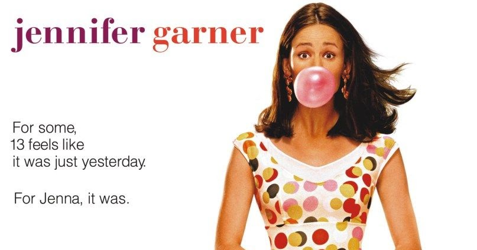
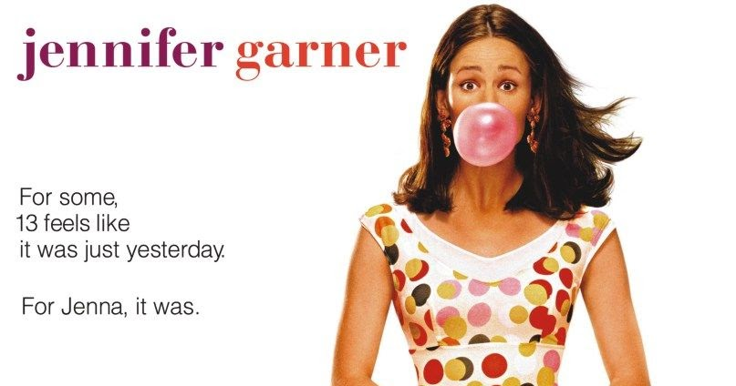
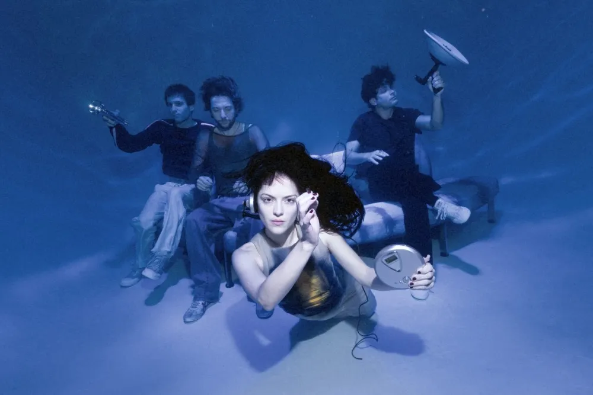
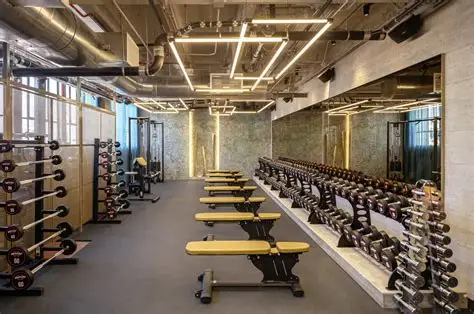
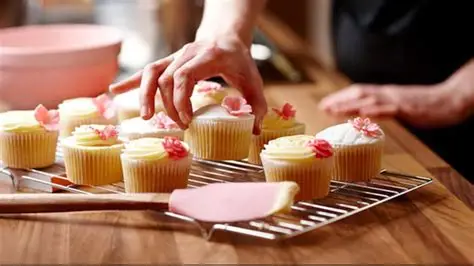

Ver peliculas.
Lo que mas hago y disfruto hacer, es ver peliculas, las que mas disfruto ver son: Si tuviera 30 y Past Lives
Lo que mas hago y disfruto hacer, es ver peliculas, las que mas disfruto ver son: Si tuviera 30 y Past Lives
Me gusta todo tipo de música, pero mis artistas favoritos son The Marias y Faye Webster.
Apenas empecé a ir al gym pero lo disfruto hacer, lo considero mi pasatiempo reciente.
Me gusta hornear pan, cupcakes y pasteles.
